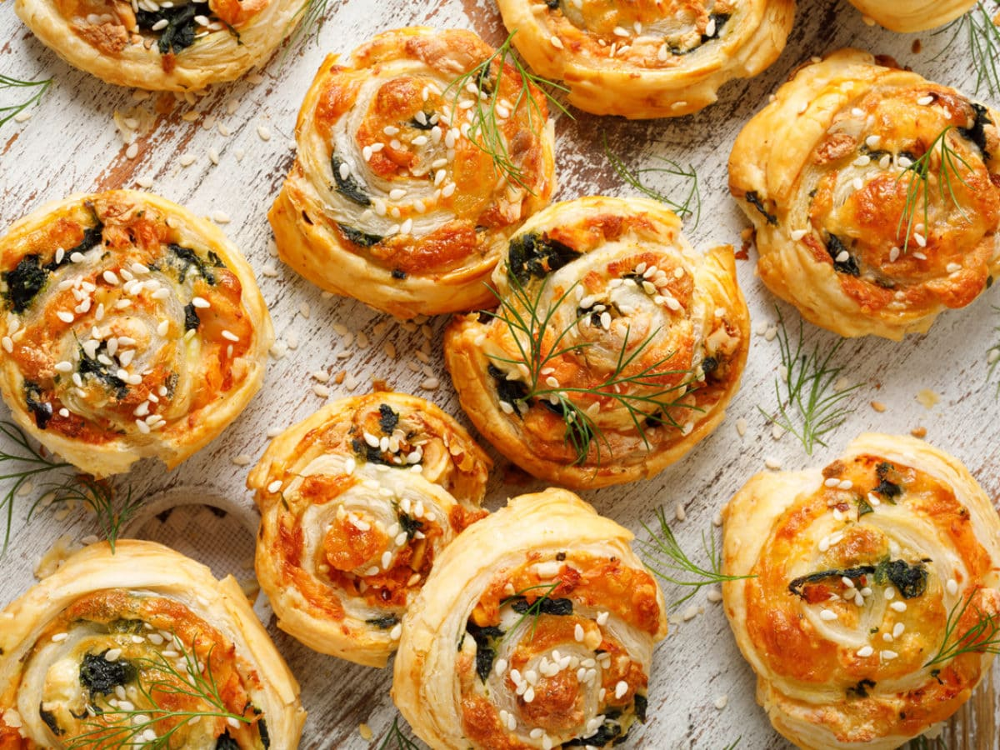

Feuilletés au Saumon et Épinards
- 1 pâte feuilletée
- 200g de saumon frais ou fumé
- 150g d’épinards frais
- 1 petit oignon, etc.
Préparation : Préchauffe ton four à 180°C... (instructions complètes)
Les fêtes de fin d’année sont des moments magiques où la convivialité, les repas gourmands, et l’ambiance chaleureuse occupent une place centrale.
Gourmandises Festives a été créé pour partager des idées de recettes simples et savoureuses, parfaites pour sublimer vos célébrations, que ce soit Noël, le réveillon du Nouvel An, ou tout autre moment festif !
Préparation : Préchauffe ton four à 180°C... (instructions complètes)
Préparation : Préchauffe ton four à 180°C... (instructions complètes)
Préparation : Préchauffe ton four à 180°C... (instructions complètes)
Préparation : Préchauffe ton four à 160°C... (instructions complètes)
Gourmandises Festives a été créé pour partager des idées de recettes simples et savoureuses, parfaites pour sublimer vos célébrations, que ce soit Noël, le réveillon du Nouvel An, ou tout autre moment festif !
Les recettes sont soigneusement sélectionnées pour plaire à tous les goûts et ajouter une touche festive à vos repas.